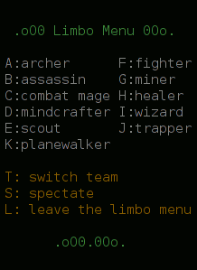

Initially, when you succesfully connect to a server, you will be a spectator (see Spectating). To actually start playing, you must pick yourself a class (see Class overview) and join a team. This happens through the limbo menu.
The default key to view the limbo menu is 'l'. Note that the limbo
menu covers your view of the game (see Client view), but the
game, being multiplayer, of course, is not paused. Here is a screenshot
of the limbo menu:

The keybindings inside the limbo menu are fixed; you cannot reconfigure them. No distinction is made between upper and lower case letters.
The keys a-j (or A-J) are used (1) to join a team, or (2) to change your class when you're already on a team. Each key corresponds to one class, as listed in the limbo menu. Notes:
The key 't' (or 'T') switches your team. It has no effect if you are spectating. If the server has team balance activated, a team change that causes the teams to be unbalanced will not be allowed. Notes:
You can press 's' (or 'S') to leave the game and become a spectator. This causes you to commit suicide if you are alive. If you are already spectating, this makes you a free spectator (see Spectating).
Press 'l' (or 'L') to exit the limbo menu and see the game view again.
Both teams have a spawning moment at regular intervals. The green team spawn happens at the middle point between two purple spawns, and vice versa. The players only see the time in seconds to their team's next spawn (see Client screen).
When the spawn moment is reached, all currently dead players in that team are respawned: they have full hitpoints and all hindered effects such as being poisoned or having a rusty weapon are removed.
Spawning happens at the most recently captured flag (on flags, see Game types), but only nine PCs at a time are spawned at a single flag. They appear somewhere in the vicinity of the flag, as close to it as possible. If more than 9 players need to be spawned, the rest will spawn at the next most recently captured flag, and so on until there are no more flags unused, at which point any remaining PCs are spawned at the first flag again.
It is generally forbidden to stalk near an enemy flag in order to easily kill newly spawned enemies. This behaviour is called spawn killing (SK). Either capture the enemy flag, or, if you can't, move away from it. If you happen to be close by when enemy spawning occurs, refrain from attacking immediately. If spawn killing for some reason is accepted on the server, this should be clearly stated somewhere.